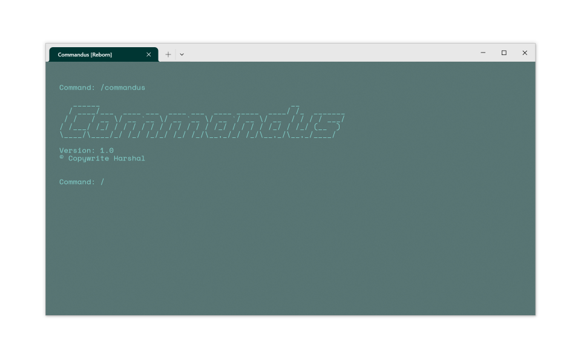

Commandus is a powerful, user-friendly subshell for Powershell. It has an array of commands that allow users to efficiently carry out daily tasks without having to worry about complex commands
Commandus is capable of performing tasks such as app installation and upgrade through winget.This gives commandus a large library of applications beyond that of Microsoft Store.
App installation:
Command: install {app_name}
Command: upgrade {app_name}
Command: uninstall {app_name}
Command: open {app_name}
Close Application:
Command: close {app_name}
Command: listapps {app_name}
Commandus can also search google, bing and access websites.
Google Search:
Command: google {search_query}
Command: bing {search_query}
Command: surf {URL}
Access simple file management using these commands:
Locate file:
Command: locate {file_name}.{file_extension}
Command: access {file_name}.{file_extension}
Command: delete {file_name}.{file_extension}
Start, turn off and manage virtual machines
Start Virtual Machine:
Command: vm start {VirtualMachine}
Command: vm stop {VirtualMachine}
Control how your PC
Shut Down PC:
Command: shutdown
Restart PC:
Command: restart
Log Off PC:
Command: logoff
Set PC to sleep:
Command: sleep